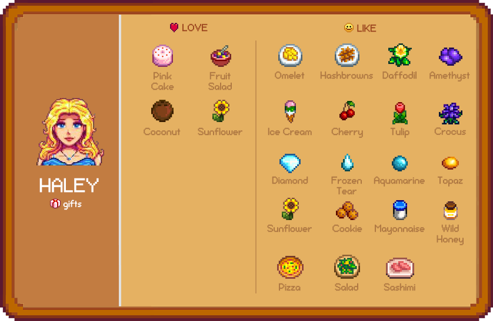

Mapa

Stardew Valley é um RPG sem fim da vida no campo!
Você herdou a antiga fazenda de seu avô no Vale do Orvalho. Equipado com ferramentas de segunda mão e algumas moedas, você irá começar sua nova vida.
O jogo é composto pos alguns lugares principais, tais como a Vila Pelicanos, a Praia, o Deserto, a Floresta Cinzaseiva, a Montanha e o Covil
Mas não para por aí!
Vários fãs criaram expansõs para o jogo e ele aumentou ainda mais o seu potencial e diversidade.
As possibilidades em Stardew Valley são infinitas!
Moradores casáveis
Abaixo segue a lista de moradores que são casáveis no jogo. Clique neles ou em seus nomes para conferir como conquistas seu(sua) amado(a)!
Abigal

Alex

Elliott

Haley

Harvey
Leah
Maru
Penny
Sam
Sebastian
E muito mais...
Stardew Valley é um jogo repleto de possibilidades únicas e existem cada vez mais opções de crescimento.
É natural se sentir perdido com tantas possibilidades, por isso eu separei alguns Guias e locais para você adquirir o jogo!

Aos amantes de Stardew Valley e artes descontraídas, este é o guia perfeito.
Ele possui belíssimas ilustrações e sua distribuição lógia auxilia desde o primeiro dia no jogo.
Autoria: Kari Fry, Ryan Novak, Eric Barone, Laura Verdin, Tom Kaktus, Keni Scherbinksi, Mitch Donaberger e Kristin Bohaty
Para baixar uma prévia do guia, clique aqui!

Aqueles que não falam inglês, existe uma opção Indie traduzida do Guia!
Ele está em sua versão completa e é repleto de capturas de tela do jogo para auxiliar a sua jornada.
Autoria: Redlace | Traduzido: Dantecvip | Revisado: Lemaoshady
Para baixar o guia completo, clique aqui!

Na Switch Store
Por R$ 24,99
Clique aqui

Na Xbox Store
Por R$ 29,00
Clique aqui

Na PlayStation Store
Por R$ 79,90
Clique aqui